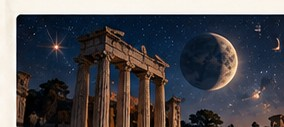
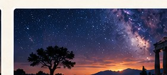

기초 개념부터 실제 차트 분석까지 단계적으로 학습합니다. 구체적인 개강 일정과 수강료는 추후 공지됩니다.
12별자리, 7행성, 하우스, 어스펙트와 필수 용어를 배웁니다.
행성의 본질적 위계, 하우스 주인, 차트의 주요 판단 원리를 공부합니다.
헬레니즘 점성술과 고전 문헌을 읽고 실제 사례에 적용합니다.
출생 차트에 근거한 개인 상담을 준비하고 있습니다. 상담 일정, 비용, 신청 방법은 확정 후 안내하겠습니다.
일반적으로 생년월일, 출생 시간, 출생 지역이 필요합니다. 개인정보는 공개 게시판에 남기지 마세요.
고대 점성가들의 개념과 해석 원리를 체계적으로 소개합니다.
도머사일, 이그절테이션, 디트리먼트, 폴의 의미와 해석.
12하우스의 주제와 주요 행성 간 각도 관계.
프톨레마이오스, 도로테오스, 피르미쿠스 등 전통 문헌의 개념.
회원가입, 로그인, 질문 작성 및 답변 저장 기능은 현재 연결되지 않았습니다. 향후 회원 인증과 데이터베이스를 연결해 실제 질문 게시판으로 확장할 예정입니다.
현재 홈페이지는 정적 GitHub Pages 사이트입니다. 입력된 질문을 저장하거나 전송하지 않습니다.
점성술 학습 자료, 용어 해설, 고전 문헌 소개를 차례로 게시할 예정입니다.
술객 점성술은 고전점성술의 원리와 전통 문헌을 공부하고 공유하는 공간입니다.